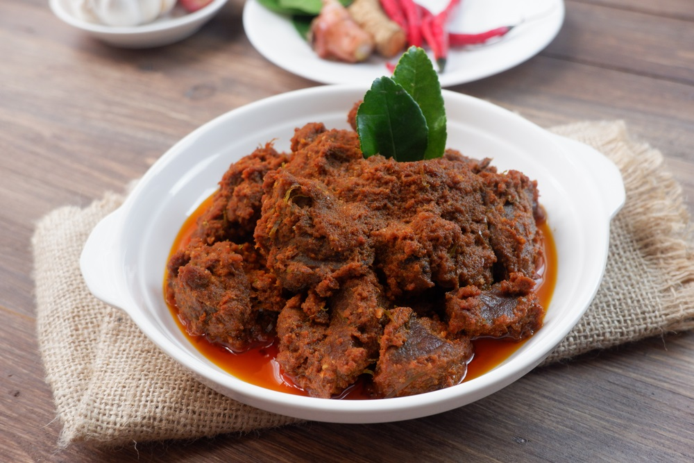

Rendang adalah makanan khas Indonesia yang berasal dari Sumatera Barat. Hidangan ini terkenal dengan cita rasa gurih, pedas, dan kaya rempah. Rendang dibuat dari daging sapi yang dimasak perlahan dalam santan dan campuran rempah-rempah seperti cabai, serai, lengkuas, bawang putih, bawang merah, dan kunyit.
Proses memasak rendang membutuhkan waktu yang cukup lama hingga santan mengering dan bumbu meresap sempurna ke dalam daging. Teknik memasak ini menghasilkan tekstur daging yang empuk dengan warna cokelat gelap serta rasa yang kuat dan khas.
Rendang sering disajikan pada acara adat, perayaan, maupun sebagai hidangan sehari-hari. Makanan ini menjadi salah satu ikon kuliner Indonesia yang telah dikenal hingga mancanegara.